<title>Storyboard Ep. 10</title>
<link rel="preconnect" href="https://fonts.googleapis.com">
<link rel="stylesheet" href="https://fonts.googleapis.com/css2?family=DotGothic16&family=Zen+Kaku+Gothic+New:wght@400;700&display=swap">
<style>
/* Layout: hoja de storyboard de producción — cabecera con la regla y la estructura, luego partes con viñetas 9:16 y notas. Noche fija (single-theme a propósito, como la serie). */
:root{
  --bg:#0b0814; --panel:#141022; --line:#2a2340; --ink:#ece8f6; --dim:#9a92b8;
  --green:#5bff9e; --red:#ff4a5e; --amber:#ffd84a;
  --f-pixel:"DotGothic16","MS Gothic",ui-monospace,monospace;
  --f-body:"Zen Kaku Gothic New","Hiragino Sans",system-ui,sans-serif;
  color-scheme:dark;
}
html,body{background:var(--bg);color:var(--ink)}
body{font-family:var(--f-body);font-size:15px;line-height:1.55;padding-inline:16px;padding-block:28px 56px}
.wrap{max-width:1180px;margin-inline:auto;display:flex;flex-direction:column;gap:40px}
.top{display:grid;gap:18px;max-width:72ch}
.eyebrow{font-family:var(--f-pixel);color:var(--green);letter-spacing:.14em;font-size:13px;margin:0}
h1{font-family:var(--f-pixel);font-weight:400;font-size:clamp(30px,6vw,52px);line-height:1.05;margin:0;text-wrap:balance}
.rule{border-left:3px solid var(--green);padding:10px 14px;background:var(--panel);margin:0}
.rule b{font-family:var(--f-pixel);font-weight:400;color:var(--green);letter-spacing:.06em}
.spine{display:flex;flex-wrap:wrap;gap:8px;padding:0;margin:0;list-style:none}
.spine a{display:flex;gap:8px;align-items:baseline;font-family:var(--f-pixel);font-size:13px;color:var(--ink);text-decoration:none;border:1px solid var(--line);padding:6px 10px;background:var(--panel)}
.spine a:hover,.spine a:focus-visible{border-color:var(--green);outline:none}
.spine .t{color:var(--dim);font-variant-numeric:tabular-nums}
.legend{color:var(--dim);font-size:14px;margin:0}
.part{display:flex;flex-direction:column;gap:16px}
.part-h{display:flex;align-items:baseline;gap:12px;border-bottom:1px solid var(--line);padding-bottom:8px}
.part-h h2{font-family:var(--f-pixel);font-weight:400;font-size:24px;margin:0}
.pn{font-family:var(--f-pixel);color:var(--bg);background:var(--green);padding:0 8px}
.pt{margin-left:auto;font-family:var(--f-pixel);color:var(--dim);font-variant-numeric:tabular-nums}
.grid{display:grid;grid-template-columns:repeat(auto-fill,minmax(min(100%,270px),1fr));gap:18px;align-items:start}
.shot{display:flex;flex-direction:column;gap:12px;background:var(--panel);border:1px solid var(--line);padding:10px}
figure{margin:0}
.shot img{display:block;width:100%;max-width:100%;height:auto;aspect-ratio:9/16;image-rendering:pixelated;background:#000}
@media (max-width:520px){.shot img{max-height:78vh;width:auto;margin-inline:auto}}
.meta{min-width:0;display:flex;flex-direction:column;gap:8px}
.tc{display:flex;gap:10px;font-family:var(--f-pixel);font-size:13px;color:var(--dim);margin:0;font-variant-numeric:tabular-nums}
.num{color:var(--amber)}
h3{font-family:var(--f-pixel);font-weight:400;font-size:19px;margin:0}
.act{margin:0}
dl{display:grid;grid-template-columns:auto minmax(0,1fr);gap:2px 10px;margin:0;font-size:13.5px}
dt{color:var(--dim)} dd{margin:0}
.fix h4{font-family:var(--f-pixel);font-weight:400;font-size:12px;letter-spacing:.12em;color:var(--red);margin:0 0 2px}
.fix ul{margin:0;padding-left:18px;font-size:13.5px}
.fix .ok{color:var(--dim);list-style:none;margin-left:-18px}

</style>
<main class="wrap">
  <header class="top">
    <p class="eyebrow">OTRA VEZ · EPISODIO 10 · STORYBOARD</p>
    <h1>El que llega tarde</h1>
    <p class="rule"><b>La regla.</b> El eco es el reflejo de Midori: copia lo que él hace y devuelve todo lo que le hacen, medio segundo después. Si Midori no se mueve, el eco tampoco.</p>
    <p class="legend">19 planos · 60 s · 120 bpm (cada corte cae en el beat). Héroes siempre a la izquierda, charco y eco a la derecha. Cada viñeta es el instante clave del plano; “A corregir” lista lo que hay que arreglar antes de la versión final.</p>
    <ul class="spine"><li><a href="#p1">1 · Gancho <span class="t">0:00</span></a></li><li><a href="#p2">2 · La regla <span class="t">0:05</span></a></li><li><a href="#p5">3 · Sale <span class="t">0:15</span></a></li><li><a href="#p8">4 · Escalada <span class="t">0:24</span></a></li><li><a href="#p13">5 · El giro <span class="t">0:37</span></a></li><li><a href="#p16">6 · Clímax <span class="t">0:46</span></a></li><li><a href="#p18">7 · Cierre y loop <span class="t">0:52</span></a></li></ul>
  </header>
  <section class="part"><header class="part-h"><span class="pn">1</span><h2>Gancho</h2><span class="pt">0:00–0:05</span></header>
<div class="grid"><article class="shot" id="p1">
  <figure>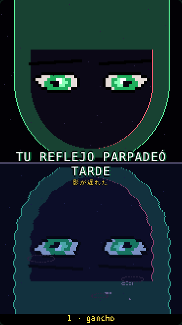</figure>
  <div class="meta">
    <p class="tc"><span class="num">01</span><span>0:00–0:05</span><span>5.0 s</span></p>
    <h3>Gancho</h3>
    <p class="act">Primer plano partido: arriba los ojos de Midori, abajo su reflejo en el charco. Él parpadea; el reflejo parpadea medio segundo tarde. Dos veces.</p>
    <dl><dt>Cámara</dt><dd>Plano fijo, pantalla partida por la línea del agua.</dd><dt>Sonido</dt><dd>Lluvia, pad grave. Texto: &quot;TU REFLEJO PARPADEÓ TARDE&quot;.</dd></dl>
    <div class="fix"><h4>A corregir</h4><ul><li>Los bordes del reflejo ondulan demasiado y deforman la capucha.</li></ul></div>
  </div>
</article></div></section><section class="part"><header class="part-h"><span class="pn">2</span><h2>La regla</h2><span class="pt">0:05–0:15</span></header>
<div class="grid"><article class="shot" id="p2">
  <figure>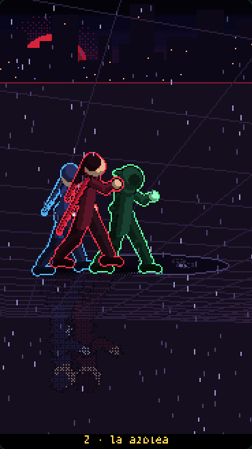</figure>
  <div class="meta">
    <p class="tc"><span class="num">02</span><span>0:05–0:09</span><span>4.0 s</span></p>
    <h3>La azotea</h3>
    <p class="act">Plano general: los tres en la azotea, el charco adelante de Midori.</p>
    <dl><dt>Cámara</dt><dd>General alto, de la izquierda (establece la geografía).</dd><dt>Sonido</dt><dd>Lluvia, pad, hi-hat suave.</dd></dl>
    <div class="fix"><h4>A corregir</h4><ul><li>Kurenai y Aoi se superponen.</li><li>En el plano general el charco casi no se ve.</li><li>La luna queda cortada arriba a la izquierda.</li></ul></div>
  </div>
</article><article class="shot" id="p3">
  <figure>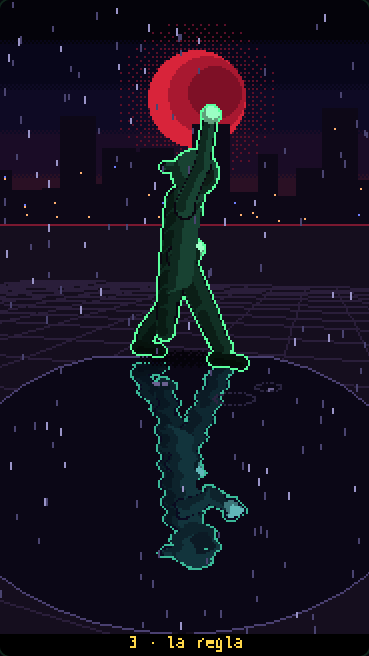</figure>
  <div class="meta">
    <p class="tc"><span class="num">03</span><span>0:09–0:13</span><span>4.0 s</span></p>
    <h3>La regla</h3>
    <p class="act">Midori levanta la mano. El reflejo la levanta medio segundo después. La baja; el reflejo la baja tarde.</p>
    <dl><dt>Cámara</dt><dd>Medio, bajo, con el charco en primer término.</dd><dt>Sonido</dt><dd>Pad. Un &quot;tic&quot; agudo cuando el reflejo copia.</dd></dl>
    <div class="fix"><h4>A corregir</h4><ul><li>La mano levantada cae justo sobre la luna y se pierde.</li><li>El reflejo se corta a la altura de la cabeza.</li></ul></div>
  </div>
</article><article class="shot" id="p4">
  <figure>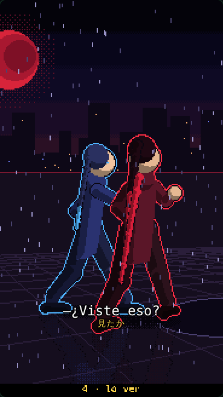</figure>
  <div class="meta">
    <p class="tc"><span class="num">04</span><span>0:13–0:15</span><span>2.0 s</span></p>
    <h3>Lo ven</h3>
    <p class="act">Kurenai y Aoi giran la cabeza hacia Midori: lo vieron.</p>
    <dl><dt>Cámara</dt><dd>Medio corto de los dos.</dd><dt>Sonido</dt><dd>&quot;—¿Viste eso?&quot;</dd></dl>
    <div class="fix"><h4>A corregir</h4><ul><li>Los dos se tapan entre sí.</li><li>Giran el cuerpo entero; debería girar solo la cabeza.</li></ul></div>
  </div>
</article></div></section><section class="part"><header class="part-h"><span class="pn">3</span><h2>Sale</h2><span class="pt">0:15–0:24</span></header>
<div class="grid"><article class="shot" id="p5">
  <figure>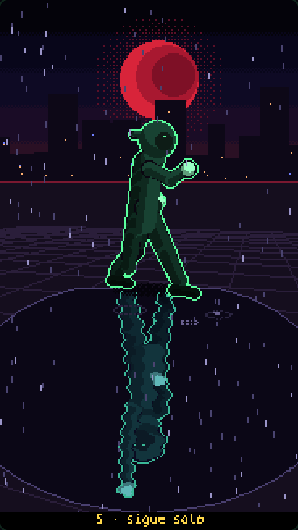</figure>
  <div class="meta">
    <p class="tc"><span class="num">05</span><span>0:15–0:17</span><span>2.0 s</span></p>
    <h3>Sigue solo</h3>
    <p class="act">Midori está quieto. Su reflejo no: gira la cara hacia nosotros.</p>
    <dl><dt>Cámara</dt><dd>El mismo encuadre que el plano 3 (para comparar).</dd><dt>Sonido</dt><dd>Silencio, un latido.</dd></dl>
    <div class="fix"><h4>A corregir</h4><ul><li>El reflejo gira, pero no se le ven los ojos: el momento pierde fuerza.</li></ul></div>
  </div>
</article><article class="shot" id="p6">
  <figure>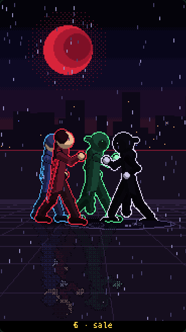</figure>
  <div class="meta">
    <p class="tc"><span class="num">06</span><span>0:17–0:22</span><span>5.0 s</span></p>
    <h3>Sale</h3>
    <p class="act">El reflejo sale del charco: una copia negra de Midori, de ojos blancos. Midori retrocede un paso.</p>
    <dl><dt>Cámara</dt><dd>General bajo de costado; tiembla.</dd><dt>Sonido</dt><dd>Burbujeo grave que sube; entra el bajo.</dd></dl>
    <div class="fix"><h4>A corregir</h4><ul><li>Los cuatro quedan amontonados.</li><li>El eco sale tapando a Midori.</li></ul></div>
  </div>
</article><article class="shot" id="p7">
  <figure>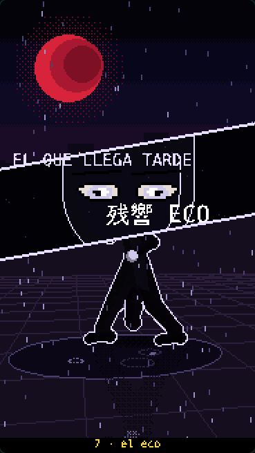</figure>
  <div class="meta">
    <p class="tc"><span class="num">07</span><span>0:22–0:24</span><span>2.0 s</span></p>
    <h3>El eco</h3>
    <p class="act">Cut-in del eco con su nombre.</p>
    <dl><dt>Cámara</dt><dd>Franja diagonal sobre el plano del eco.</dd><dt>Sonido</dt><dd>Platillo + franja que entra.</dd></dl>
    <div class="fix"><h4>A corregir</h4><ul><li>El texto de arriba choca con el borde de la franja.</li></ul></div>
  </div>
</article></div></section><section class="part"><header class="part-h"><span class="pn">4</span><h2>Escalada</h2><span class="pt">0:24–0:37</span></header>
<div class="grid"><article class="shot" id="p8">
  <figure>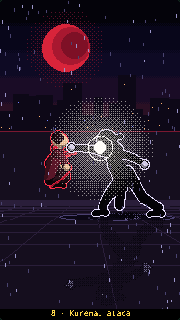</figure>
  <div class="meta">
    <p class="tc"><span class="num">08</span><span>0:24–0:27</span><span>3.0 s</span></p>
    <h3>Kurenai ataca</h3>
    <p class="act">Kurenai corre y le pega. El golpe entra, el eco ondula como agua y no se mueve. Medio segundo después le devuelve el MISMO golpe y la manda a volar.</p>
    <dl><dt>Cámara</dt><dd>General de costado (los dos en cuadro, de izquierda a derecha).</dd><dt>Sonido</dt><dd>Batería completa. Golpe &quot;tap&quot; + ondas; el devuelto, más fuerte.</dd></dl>
    <div class="fix"><h4>A corregir</h4><ul><li>El destello tapa el punto de contacto.</li><li>Las ondas del eco casi no se ven.</li></ul></div>
  </div>
</article><article class="shot" id="p9">
  <figure>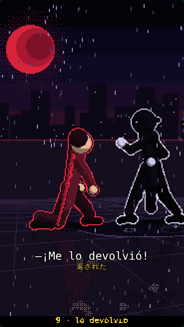</figure>
  <div class="meta">
    <p class="tc"><span class="num">09</span><span>0:27–0:29</span><span>2.0 s</span></p>
    <h3>Lo devolvió</h3>
    <p class="act">Kurenai en el piso, mira al eco: &quot;¡Me lo devolvió!&quot;.</p>
    <dl><dt>Cámara</dt><dd>Medio desde atrás de Kurenai, el eco al fondo.</dd><dt>Sonido</dt><dd>Bajo y hi-hat.</dd></dl>
    <div class="fix"><h4>A corregir</h4><ul><li>Kurenai &quot;arrodillada&quot; se lee como agachada.</li></ul></div>
  </div>
</article><article class="shot" id="p10">
  <figure>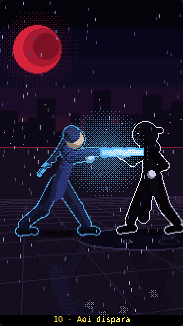</figure>
  <div class="meta">
    <p class="tc"><span class="num">10</span><span>0:29–0:31</span><span>2.0 s</span></p>
    <h3>Aoi dispara</h3>
    <p class="act">Aoi carga y dispara un rayo azul al eco.</p>
    <dl><dt>Cámara</dt><dd>Medio de Aoi, rayo saliendo hacia la derecha.</dd><dt>Sonido</dt><dd>Carga ascendente + rayo.</dd></dl>
    <div class="fix"><h4>A corregir</h4><ul><li>El rayo no ilumina a Aoi.</li></ul></div>
  </div>
</article><article class="shot" id="p11">
  <figure>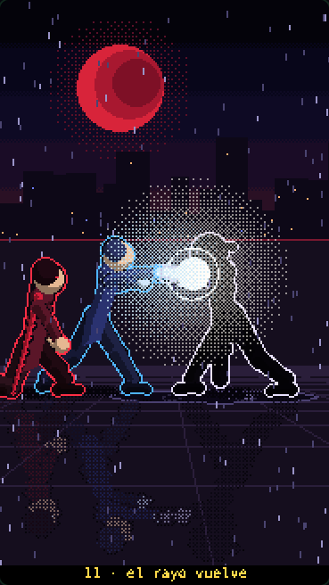</figure>
  <div class="meta">
    <p class="tc"><span class="num">11</span><span>0:31–0:35</span><span>4.0 s</span></p>
    <h3>El rayo vuelve</h3>
    <p class="act">El rayo entra en el eco, que ondula. Medio segundo después dispara el MISMO rayo de vuelta. Los dos rayos chocan y el choque empuja hacia Aoi.</p>
    <dl><dt>Cámara</dt><dd>General de costado.</dd><dt>Sonido</dt><dd>Choque de rayos zumbando, sube.</dd></dl>
    <div class="fix"><h4>A corregir</h4><ul><li>Kurenai, al fondo, se cruza con Aoi.</li><li>El choque de rayos se lee como una bola blanca.</li></ul></div>
  </div>
</article><article class="shot" id="p12">
  <figure>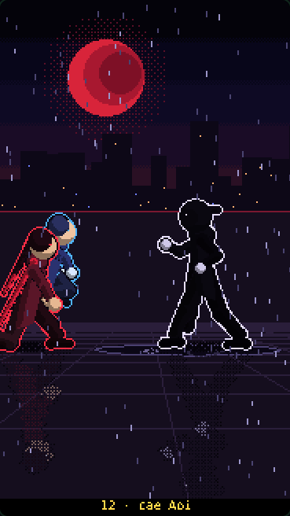</figure>
  <div class="meta">
    <p class="tc"><span class="num">12</span><span>0:35–0:37</span><span>2.0 s</span></p>
    <h3>Cae Aoi</h3>
    <p class="act">El choque le explota encima a Aoi y cae al lado de Kurenai.</p>
    <dl><dt>Cámara</dt><dd>General de costado; destello blanco.</dd><dt>Sonido</dt><dd>Explosión; corta la batería.</dd></dl>
    <div class="fix"><h4>A corregir</h4><ul><li>Aoi cae encima de Kurenai.</li></ul></div>
  </div>
</article></div></section><section class="part"><header class="part-h"><span class="pn">5</span><h2>El giro</h2><span class="pt">0:37–0:46</span></header>
<div class="grid"><article class="shot" id="p13">
  <figure>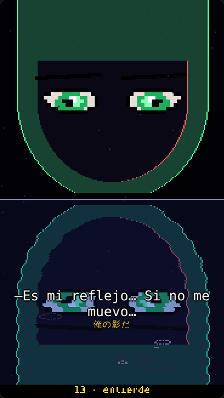</figure>
  <div class="meta">
    <p class="tc"><span class="num">13</span><span>0:37–0:40</span><span>3.0 s</span></p>
    <h3>Entiende</h3>
    <p class="act">Primer plano partido otra vez: Midori y su reflejo, ahora en sincronía. Midori entiende.</p>
    <dl><dt>Cámara</dt><dd>Igual al gancho (rima visual).</dd><dt>Sonido</dt><dd>&quot;—Es mi reflejo… Si no me muevo…&quot;</dd></dl>
    <div class="fix"><h4>A corregir</h4><ul><li>El subtítulo cae sobre el reflejo.</li></ul></div>
  </div>
</article><article class="shot" id="p14">
  <figure>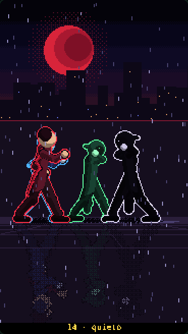</figure>
  <div class="meta">
    <p class="tc"><span class="num">14</span><span>0:40–0:44</span><span>4.0 s</span></p>
    <h3>Quieto</h3>
    <p class="act">Midori se para frente al eco y se congela con los brazos en guardia. El eco lo copia medio segundo tarde… y también se congela. Atrás, Kurenai y Aoi se levantan.</p>
    <dl><dt>Cámara</dt><dd>General de costado; nada se mueve salvo la lluvia.</dd><dt>Sonido</dt><dd>Silencio total, solo lluvia y un latido.</dd></dl>
    <div class="fix"><h4>A corregir</h4><ul><li>Aoi queda tapado por Kurenai.</li><li>La guardia de Midori no se lee como &quot;congelarse&quot;.</li></ul></div>
  </div>
</article><article class="shot" id="p15">
  <figure>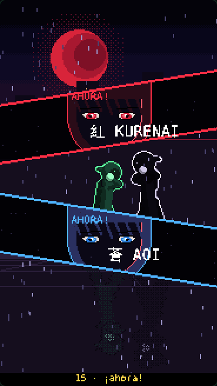</figure>
  <div class="meta">
    <p class="tc"><span class="num">15</span><span>0:44–0:46</span><span>2.0 s</span></p>
    <h3>¡Ahora!</h3>
    <p class="act">Cut-in doble: Kurenai y Aoi.</p>
    <dl><dt>Cámara</dt><dd>Dos franjas cruzadas sobre el eco congelado.</dd><dt>Sonido</dt><dd>Platillo; vuelve la batería.</dd></dl>
    <div class="fix"><h4>A corregir</h4><ul><li class="ok">Sin problemas a la vista.</li></ul></div>
  </div>
</article></div></section><section class="part"><header class="part-h"><span class="pn">6</span><h2>Clímax</h2><span class="pt">0:46–0:52</span></header>
<div class="grid"><article class="shot" id="p16">
  <figure>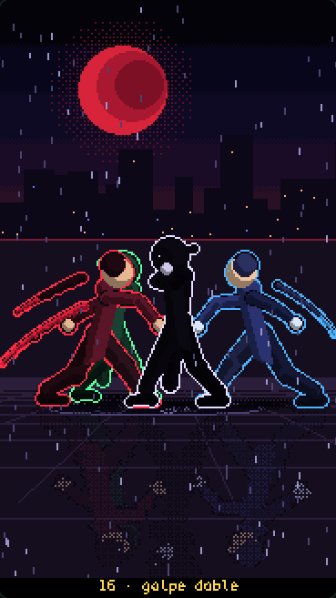</figure>
  <div class="meta">
    <p class="tc"><span class="num">16</span><span>0:46–0:48</span><span>2.0 s</span></p>
    <h3>Golpe doble</h3>
    <p class="act">Kurenai y Aoi le pegan a la vez desde los dos lados. El eco está congelado copiando a Midori: no puede devolver nada.</p>
    <dl><dt>Cámara</dt><dd>General de costado: uno entra por cada lado.</dd><dt>Sonido</dt><dd>Golpe doble + impact frames.</dd></dl>
    <div class="fix"><h4>A corregir</h4><ul><li>La pierna de Kurenai se cruza con Midori al fondo.</li></ul></div>
  </div>
</article><article class="shot" id="p17">
  <figure>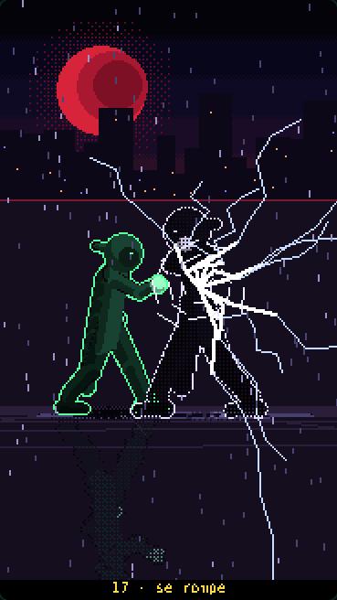</figure>
  <div class="meta">
    <p class="tc"><span class="num">17</span><span>0:48–0:52</span><span>4.0 s</span></p>
    <h3>Se rompe</h3>
    <p class="act">El eco se agrieta como la superficie del agua, se deshace y vuelve al charco.</p>
    <dl><dt>Cámara</dt><dd>Medio bajo, de frente al eco.</dd><dt>Sonido</dt><dd>Vidrio que se quiebra + ondas que se apagan.</dd></dl>
    <div class="fix"><h4>A corregir</h4><ul><li>Las grietas se salen del cuerpo del eco.</li></ul></div>
  </div>
</article></div></section><section class="part"><header class="part-h"><span class="pn">7</span><h2>Cierre y loop</h2><span class="pt">0:52–1:00</span></header>
<div class="grid"><article class="shot" id="p18">
  <figure>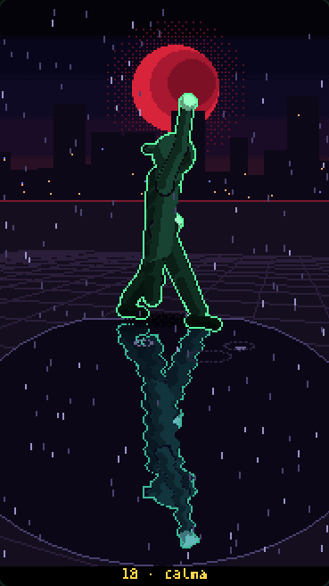</figure>
  <div class="meta">
    <p class="tc"><span class="num">18</span><span>0:52–0:55</span><span>3.0 s</span></p>
    <h3>Calma</h3>
    <p class="act">Midori levanta la mano otra vez. Su reflejo la levanta al mismo tiempo. Respira.</p>
    <dl><dt>Cámara</dt><dd>El mismo encuadre que el plano 3 (cierra la rima).</dd><dt>Sonido</dt><dd>Pad suave, la batería se fue.</dd></dl>
    <div class="fix"><h4>A corregir</h4><ul><li>Igual que en el plano 3: la mano contra la luna.</li></ul></div>
  </div>
</article><article class="shot" id="p19">
  <figure>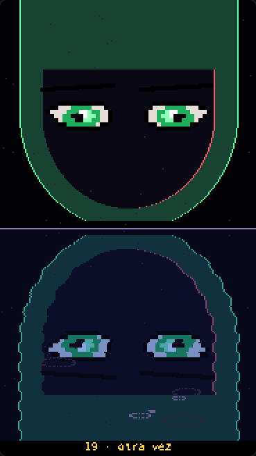</figure>
  <div class="meta">
    <p class="tc"><span class="num">19</span><span>0:55–1:00</span><span>5.0 s</span></p>
    <h3>Otra vez</h3>
    <p class="act">Primer plano partido. Midori parpadea… y el reflejo parpadea tarde otra vez. Último cuadro = primer cuadro del episodio.</p>
    <dl><dt>Cámara</dt><dd>Igual al gancho.</dd><dt>Sonido</dt><dd>&quot;—…Otra vez.&quot; · el loop vuelve al plano 1.</dd></dl>
    <div class="fix"><h4>A corregir</h4><ul><li>Igual que en el plano 1.</li></ul></div>
  </div>
</article></div></section>
</main>
